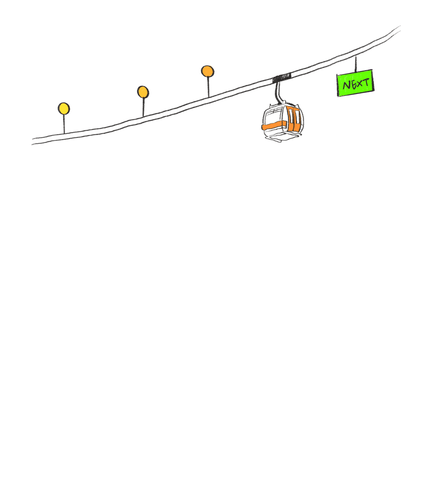

Experience.

手机美化
账号矩阵
（3W粉丝）
账号矩阵
（3W粉丝）
AI数字人
账号矩阵
（26W粉丝）
账号矩阵
（26W粉丝）
美区运营
（2500W播放）
（2500W播放）
用AI赋能
更多行业
更多行业
跨行业
AI内容体系
AI内容体系
2025/07
2026/06 FULL TIME 广州越光信息科技有限公司
(广州)
2026/06 FULL TIME 广州越光信息科技有限公司
(广州)
从 0 到 1 搭建公司品牌体系，形成"品牌运营 + AI 技术"的复合落地能力
- 统筹官网、全平台账号及线下活动，累计争取市场经费 20W+
- 平台上线初期打造爆款视频，单条引流 2000+ C 端客户
- 赋能 BD 制作 AI 产品 Demo 视频，助力商务成单
- 建立分行业提示词库与 ComfyUI 工作流,内容效率提升 80%+
核心突破
完全摆脱实拍依赖，沉淀跨行业可复用方法论
市场运营
📁 查看项目详情
1 / 1
2023/04
2025/05 FULL TIME 深圳元数智慧科技有限公司
(深圳)
2025/05 FULL TIME 深圳元数智慧科技有限公司
(深圳)
探索 AI 技术在内容运营中的落地，实现规模化降本增效
- 统筹数字人矩阵、AIGC 工具及海外平台三大核心项目
- 全平台总粉丝增长 30W+，单条视频最高播放 2500W
- 降低人力成本 90%，冷启动周期从 30 天压缩至 7 天
- 方案被企业及高校批量采购应用
核心突破
解决传统运营成本高、难以规模化的痛点
AI 新媒体运营负责人
📁 查看项目详情
1 / 1
2021/06
2023/01 FULL TIME 深圳文道信息科技有限公司
(深圳)
2023/01 FULL TIME 深圳文道信息科技有限公司
(深圳)
传统内容运营基本功打磨，跑通完整商业变现闭环
- 从 0 到 1 孵化手机美化双账号矩阵，总粉丝 3W+
- 创新"教程引流 + 私域转化"模型，私域转化率 10%
- 带动公司产品销量提升 8%，内容形式被行业效仿
核心突破
跑通从 0 到 1 账号孵化与商业变现闭环
新媒体运营
📁 查看项目详情
1 / 1